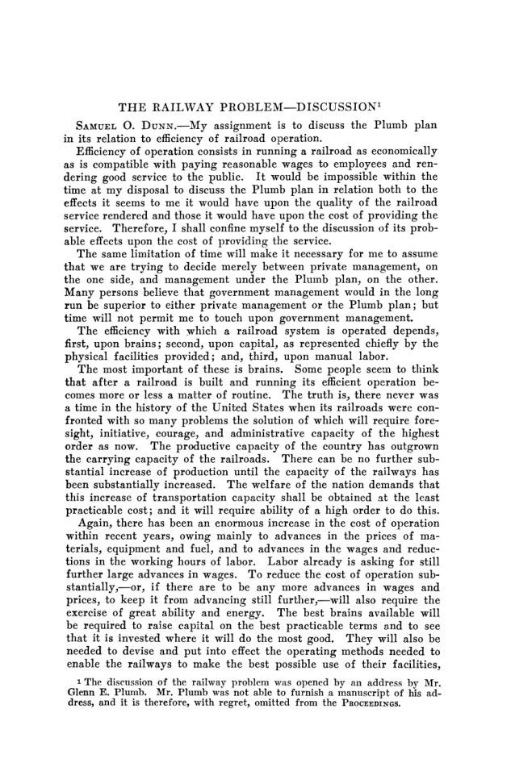

Chicago, 1919: impostos de guerra, reparações e preços da paz
Leitura: 6 min
Chicago, dezembro de 1919: Haig e T. S. Adams discutem o imposto sobre lucros extraordinários, Taussig mostra como a Alemanha teria de pagar as reparações, e Mitchell e Moulton preveem os preços.


Às 10h30 de segunda-feira, 29 de dezembro de 1919, no Red Room do Hotel La Salle, em Chicago, a American Economic Association abriu sua 32ª reunião anual com uma pergunta de política fiscal: o imposto sobre lucros extraordinários deveria ficar como parte permanente do sistema tributário? A sessão, conjunta com a associação dos professores universitários de contabilidade, foi presidida pelo vice-presidente Harry R. Hatfield, da University of California.
O suplemento de março de 1920 reúne os textos e debates dos três dias da reunião. A agenda é a da transição para a paz: impostos de guerra, reparações alemãs, investimento estrangeiro, participação dos empregados na gestão, preços, política bancária e ferrovias. O discurso presidencial de Henry B. Gardner, lido na noite do dia 29 em sessão conjunta com a American Sociological Society, consta do programa, mas não é reproduzido neste volume; saiu na edição regular da revista.
O imposto de guerra sobre lucros deveria sobreviver à paz?
Robert Murray Haig, da Columbia University, relatou a investigação que fez na Inglaterra a pedido da comissão de finanças de guerra da associação. Sua notícia principal: os britânicos não pretendiam abolir o imposto, mas refiná-lo e torná-lo permanente, adotando como base o capital investido, à maneira da lei americana de 1917, no lugar dos lucros de antes da guerra. T. S. Adams, de Yale, chegou à conclusão oposta para os Estados Unidos: o imposto pesava demais sobre a administração e deveria dar lugar a um imposto adicional sobre os lucros não distribuídos das sociedades anônimas.
Como a Alemanha pagaria?
F. W. Taussig, de Harvard, calculou que o tratado de paz exigiria remessas de pelo menos US$ 750 milhões por ano, talvez um bilhão, por cerca de uma geração. Seu argumento central é que só há um meio de pagar: um excedente permanente de exportações de mercadorias sobre importações. Daí uma ironia, dita por ele com todas as letras: os aliados que pediam reparação eram os mesmos que tentavam barrar as exportações alemãs. John H. Williams, de Princeton, concordou com o núcleo da tese, mas duvidou de que o comércio internacional chegue a “estágios de equilíbrio”.
“Os países aliados, na medida em que sufocam as exportações da Alemanha, estão cortando o nariz para se vingar do rosto.” (“The Allied countries, so far as they smother Germany's exports, ... are cutting off the nose to spite the face.”)
Quem deve controlar o capital e o trabalho?
Henry C. Adams, de Michigan, propôs uma comissão internacional para supervisionar os investimentos estrangeiros nas ferrovias da China, como primeiro passo para tirar os empréstimos a países fracos do terreno da rivalidade diplomática. T. N. Carver, de Harvard, descreveu um “sistema industrial equilibrado”, em que a escassez relativa de cada tipo de trabalho, corrigida pela educação, igualaria a prosperidade entre ocupações sem tocar na liberdade de contrato. Royal Meeker, comissário de estatísticas do trabalho, examinou os comitês de fábrica e os conselhos britânicos do sistema Whitley e concluiu que a representação dos empregados ainda estava em fase de experiência.
Os preços cairiam depois da guerra?
Wesley C. Mitchell, da New School for Social Research, reconstituiu a alta de preços de 1914 a 1919 e explicou por que a queda iniciada depois do armistício parou na primavera de 1919. Sua previsão dependia do Federal Reserve: se contivesse a especulação, 1920 não teria variações violentas; se não, viriam aperto financeiro e depressão. H. G. Moulton, de Chicago, foi mais longe: como o crédito bancário financia a própria produção, só uma depressão baixaria os preços, e o Federal Reserve deveria elevar os juros já.
O que mais há na edição?
Completam o volume o debate sobre o Plano Plumb para as ferrovias, cujo autor não entregou o texto de sua palestra, as mesas-redondas sobre monopólio, imigração, ensino de economia e comercialização em grande escala, as atas das reuniões administrativas, que registram a eleição de H. J. Davenport para presidente, os relatórios do secretário, do tesoureiro, da auditoria e do editor da revista, os das comissões de comércio exterior, coordenação tributária, questionários do alistamento militar e censo, e a constituição revista da associação.
Na minha leitura
Na minha leitura, o fio de Chicago é a capacidade administrativa como limite da política econômica. Haig e T. S. Adams divergem sobre o imposto, mas concordam que ele vale o que vale a máquina que o cobra; Taussig mostra que a reparação esbarra no mecanismo de pagamento antes de esbarrar na riqueza alemã; Meeker e a comissão do censo tratam de organizações que ainda precisavam ser construídas.
A outra lição é de método. Quase todos os autores raciocinam a partir de um mecanismo explícito, seja o do câmbio, o do crédito ou o da incidência do imposto, e só então perguntam pelos números. É uma boa defesa contra a tentação de julgar uma política pelo que ela promete em vez de pelo caminho por onde teria de passar.
Glossário
- Imposto sobre lucros extraordinários
- imposto sobre o lucro acima de um retorno normal, medido por lucros anteriores ou pelo capital investido.
- Reparações
- pagamentos impostos à Alemanha pelo tratado de paz para compensar os danos de guerra dos aliados.
- Plano Plumb
- proposta de propriedade pública das ferrovias americanas com gestão partilhada entre empregados, dirigentes e governo.
- Sistema Whitley
- organização britânica de conselhos industriais nacionais e distritais e comitês de fábrica, com patrões e empregados.
- Imposto único
- proposta de substituir os demais tributos por um imposto sobre o valor da terra.
- Taxa de redesconto
- juro cobrado pelos bancos do Federal Reserve ao emprestar aos bancos associados.
Artigos (25)
- British Experience with Excess Profits Taxation — Robert Murray Haig, Columbia University (pp. 1–14). Haig chama o imposto especial sobre lucros extraordinários de única invenção relevante das finanças de guerra e relata a investigação que fez na Inglaterra, em 1919, para a comissão de finanças de guerra da associação. Ao contrário da impressão corrente, diz, os britânicos pretendiam manter o imposto, reduzido de 80% para 40% no orçamento de 1919, não por gostarem dele, mas porque as alternativas, um imposto sobre o capital ou impostos sobre o consumo, pareciam piores. A versão permanente adotaria a base americana do capital investido, com alíquotas moderadas e progressivas. Haig descreve os efeitos do imposto pesado e temporário: gastos com publicidade, reformas e bonificações, subavaliação de estoques, comércio de empresas falidas com bons registros de antes da guerra e atrasados de cerca de £ 200 milhões. Elogia a administração britânica, com avaliações feitas por funcionários permanentes e recursos julgados por quem não é do Tesouro. Conclui que, mantida a arrecadação, continuar o imposto seria melhor do que um imposto geral sobre vendas ou do que dobrar a alíquota normal do imposto de renda, desde que os gastos caíssem e a administração americana melhorasse. JSTOR · ler o comentário
- Immediate Future of the Excess Profits Tax — T. S. Adams, Yale University (pp. 15–18). Adams parte da premissa de que não havia motivo para reduzir a arrecadação e enumera cinco fatos. O sistema de impostos internos precisava ser simplificado com urgência: os impostos de renda e de lucros eram tão pesados e complexos que o governo não conseguia auditores para liquidar os casos antigos no ritmo em que surgiam novos, e muitas das maiores declarações de 1917 ainda não tinham sido auditadas. O imposto de lucros extraordinários atingia só parte das sociedades anônimas, enquanto as sobretaxas do imposto de renda não alcançavam os lucros que elas retinham; sócios de uma firma podiam pagar muito mais ou muito menos do que concorrentes organizados como companhia. Para Adams, a única saída praticável era abolir o imposto e aplicar às sociedades um imposto pleno de renda: alíquota normal de 10% para pessoas e empresas e um adicional de cerca de 20% sobre lucros não distribuídos, evitável por meio de um “dividendo construtivo” tributado nas mãos dos acionistas. Pede ainda que o Congresso autorize liquidações definitivas de todos os créditos tributários pendentes. JSTOR
- The Excess Profits Tax--Discussion — David Friday, George E. Holmes, Arthur Anderson, Thomas E. Lyons e Roy G. Blakey (pp. 19–32). Friday defende o imposto: as declarações de 1917 mostram lucros muito dispersos em relação ao capital investido, e manter o imposto por uma década daria dados para uma teoria dos lucros. Holmes propõe uma definição uniforme de capital investido, que inclua o valor de todos os ativos em 1913, inclusive os intangíveis. Anderson, de Chicago, atribui o efeito sobre preços sobretudo às alíquotas altas, que estimularam gastos. Lyons, da comissão tributária de Wisconsin, prefere melhorar a lei existente a arriscar uma nova. Blakey vê um dilema administrativo e critica a tributação de ganhos nominais de preço. JSTOR
- Germany's Reparation Payments — F. W. Taussig, Harvard University (pp. 33–49). Taussig estima que o tratado de paz obrigaria a Alemanha a remeter de US$ 750 milhões a um bilhão por ano durante cerca de trinta anos e pergunta como uma soma dessas, arrecadada internamente, pode sair do país. Pela teoria ricardiana, o ouro sairia, os preços cairiam na Alemanha e subiriam fora, e as exportações cresceriam até o excedente igualar a remessa; a Alemanha perderia ainda por vender mais mercadorias e comprar menos por dólar. Mas a escala torna o mecanismo do ouro inviável, e a Alemanha está sob papel-moeda: a demanda oficial por divisas manteria o câmbio acima dos preços internos, premiando exportadores e deslocando trabalho e capital para as indústrias de exportação. O ponto central é que a reparação só pode ser paga em mercadorias, pelo excedente de exportações; as estatísticas de riqueza total não vêm ao caso. Daí a contradição: os aliados exigem pagamento e, ao mesmo tempo, querem fechar mercados à Alemanha. Taussig vê na Rússia o grande destino das exportações alemãs, prevê ajustes dolorosos na entrada e na saída do período de reparação e adverte que, vendidos os títulos a investidores, não haverá como cancelar a dívida. JSTOR · ler o comentário
- Germany's Reparation Payments--Discussion — John H. Williams, Princeton University, e Ditlew M. Frederiksen (pp. 50–57). Williams, ex-aluno de Taussig, aceita que os pagamentos tomarão a forma de um excedente de exportações, mas lembra que seu tamanho dependerá de outros itens do balanço de pagamentos, como frete e juros, e duvida de “estágios de equilíbrio” no comércio internacional, sobretudo sob papel-moeda, com base em seu estudo da Argentina. Para ele, o prêmio ao exportador vem da diferença entre preços de exportação e custos internos. Frederiksen, a partir do comércio triangular da Dinamarca, prevê que a reparação estimulará a agricultura de países concorrentes e pressionará os agricultores americanos. JSTOR
- International Supervision Over Foreign Investments — Henry C. Adams, University of Michigan (pp. 58–67). Adams observa que o comércio mundial ultrapassa a jurisdição de qualquer governo e que nem a escola clássica nem a da economia nacional reconhecem uma economia mundial com problemas próprios. Entre países de nível semelhante, como Inglaterra e Estados Unidos, o investimento estrangeiro não cria questões diplomáticas: o credor confia nos tribunais do devedor. O problema está nos empréstimos a países economicamente atrasados e politicamente fracos, onde os credores pedem proteção especial ao próprio governo e exercem influência extraterritorial, inclusive o controle de receitas e da operação de empresas. Toma como caso as ferrovias da China: concessões a sindicatos bancários com caráter político, supervisão dos bancos sobre a operação, engenheiros e contadores nomeados pelos credores e compras de materiais por meio dos mesmos bancos. Nem a porta aberta, que trata do comércio de mercadorias, nem o consórcio internacional de banqueiros, do qual os bancos americanos se retiraram, resolveram a questão. Adams apoia a proposta de uma comissão internacional de supervisão das ferrovias chinesas, com representação da China, como passo limitado, mas praticável, rumo a regras comuns para o investimento estrangeiro. JSTOR
- Foreign Investments--Discussion — Yu Tinn Hugh (pp. 68). Hugh sustenta que uma política de investimentos internacionais na China só funcionará se baseada na justiça. Descreve a divisão do país em esferas de influência de várias potências, a porta aberta que existe apenas em teoria e o uso do controle de ferrovias para favorecer comerciantes nacionais. Propõe um escritório internacional de investimentos, com um representante de cada país credor e, para empréstimos destinados ao desenvolvimento da China, representação chinesa igual à de todas as potências somadas, na supervisão do uso e do pagamento dos fundos. JSTOR
- Some Probable Results of a Balanced Industrial System — T. N. Carver, Harvard University (pp. 69–77). Carver toma emprestada a ideia de ração ou solo equilibrado e a aplica ao sistema industrial inteiro. Distingue o equilíbrio de oferta e demanda, obtido por qualquer preço que iguale compras e vendas, de um equilíbrio verdadeiro, em que o preço também é satisfatório do ponto de vista social. Um salário baixo pode ser de equilíbrio e, ainda assim, deixar os trabalhadores pobres; decretar salários mais altos, diz, trata o sintoma e não a causa, gerando excesso de mão de obra ou desemprego. A causa só se corrige reduzindo a oferta relativa do trabalho mal pago ou aumentando os fatores que o complementam, sobretudo pela educação popular, que desvia pessoas das ocupações superlotadas. Num sistema equilibrado, a produtividade marginal do trabalho seria quase a mesma em todas as ocupações. Carver enumera quatro resultados: prosperidade igual entre ocupações, embora não entre indivíduos; poder de barganha igual entre capitalistas e trabalhadores; participação voluntária dos trabalhadores na gestão, porque o fator escasso ganha voz; e uma escola livre da tarefa de redistribuir a população entre ofícios. Tudo isso, ressalta, sem abandonar a liberdade de contrato. JSTOR
- A Balanced Industrial System--Discussion — Roy G. Blakey, Harry Gunnison Brown, J. E. Le Rossignol e Charles E. Persons (pp. 78–88). Blakey elogia a exposição de Carver, mas vê nela uma volta ao laissez-faire e defende a legislação social enquanto o equilíbrio não chega. Brown argumenta que a lógica de Carver se aproxima da dos defensores do imposto único sobre a terra e que a objeção dos direitos adquiridos atinge igualmente a proposta mais moderada de tributar só a valorização futura. Le Rossignol distingue equilíbrio de troca e proporção entre fatores e pede uma síntese entre laissez-faire e controle social. Persons lista pré-requisitos, como maior igualdade de posses e educação de trabalhadores e proprietários. JSTOR
- Employees' Representation in Management of Industry — Royal Meeker, U.S. Commissioner of Labor Statistics (pp. 89–102). Meeker reduz a inquietação operária a três causas: insatisfação com salários e com a parte que cabe ao trabalho, com a gestão das empresas, conduzidas à distância por quem não conhece a fábrica, e com a própria natureza do trabalho, monótono e sem saída para cargos de direção. Chama o fenômeno de absenteísmo do proprietário industrial e critica a primeira administração científica por tratar o operário como máquina; o trabalho, diz, fica mais leve quando exige mais da cabeça do trabalhador. Na guerra, a escassez de mão de obra levou governos e empresas a experimentar a participação dos empregados. Na Inglaterra, o sistema Whitley criou conselhos nacionais em cerca de cinquenta indústrias, mas só três, fósforos, borracha e cerâmica, tinham a estrutura completa, e sobretudo no papel. Nos Estados Unidos, os comitês de fábrica se dividem entre sindicais, abertos e de fábricas fechadas aos sindicatos. Meeker acha que a corrida dos empregadores para criar comitês acabou, defende que todo trabalhador possa apresentar queixas e sugestões e propõe salário mínimo garantido por posto, mais bônus ligado a reduções de custo. Termina dizendo que a cura da democracia é mais democracia. JSTOR
- Employees' Participation in Management--Discussion — Harry B. Jordan, Willard E. Hotchkiss, D. R. Stevens, Francis H. Bird, F. S. Deibler e Ditlew M. Frederiksen (pp. 103–128). O coronel Jordan descreve a organização dos trabalhadores no arsenal de Rock Island, que vê como meio de obter trabalho em equipe, não como panaceia. Hotchkiss, da associação de alfaiatarias por atacado, defende acordos voluntários por indústria com interpretação imparcial contínua. Stevens, da Goodyear, aponta desconfiança e egoísmo como etapas a vencer. Bird, da United Typothetae, sugere experiências graduais em fábricas escolhidas. Deibler situa a participação na evolução dos incentivos ao trabalho, e Frederiksen lembra o ponto de vista do consumidor, que pagaria custos mais altos, e defende a participação nos lucros. JSTOR
- Prices and Reconstruction — Wesley C. Mitchell, New School for Social Research (pp. 129–155). Mitchell quer saber em que bases se pode prever o rumo dos preços por atacado nos Estados Unidos nos anos seguintes. A experiência das guerras napoleônicas e da Guerra Civil, quando os preços caíram após o conflito, já fora desmentida pela alta de 1919; por isso prefere analisar o processo pelo qual os fatores atuaram, apoiado nas medições estatísticas disponíveis. Reconstitui o choque financeiro de 1914, a alta antes e depois da entrada americana na guerra e a reação ao armistício: queda forte de dezembro a fevereiro ou março e recuperação lenta até junho. A queda parou porque os preços contidos durante a guerra subiram com o fim do controle, as exportações de alimentos voltaram a crescer, os consumidores recuperaram compras adiadas e a produção não acompanhou; pesaram também a resistência a cortes de salários e preços e a especulação. Para 1920, tudo dependeria do Federal Reserve: contendo a especulação, não haveria variações violentas; falhando, viria um período de forte aperto financeiro. A longo prazo, pesariam o ouro e a volta da Europa ao padrão-ouro. Conclui pedindo um sistema monetário melhor que o existente. JSTOR
- Banking Policy and the Price Situation — H. G. Moulton, The University of Chicago (pp. 156–175). Moulton parte da hipótese de que é desejável baixar o nível geral de preços e pergunta se a política bancária pode fazê-lo. Critica a abordagem da teoria quantitativa, que compara a quantidade de moeda com a de bens já produzidos: o comércio, diz, toma crédito bancário para reunir terra, trabalho e capital em cada etapa da produção, de modo que as necessidades do comércio em termos monetários sobem quando os custos sobem. Por isso, cortar empréstimos não reduz os preços automaticamente; reduz a produção. Analisa os efeitos de uma contração de crédito e a política do Federal Reserve, cujas reservas estavam perto do mínimo. Vê uma depressão próxima em qualquer cenário: com exportações em queda, pela própria retração; com exportações fortes, pela pressão sobre o mercado monetário; com aumentos de salários, pela expansão do crédito necessária para financiá-los. Conclui que o Federal Reserve deveria elevar substancialmente os juros de redesconto e frear a indústria de imediato, e que, se a depressão é inevitável, quanto antes vier, melhor, pois só ela baixaria preços e recomporia as reservas. Em nota, sugere juros de sete ou oito por cento. JSTOR
- Prices and Banking Policy--Discussion — James B. Forgan, George W. Dowrie, George E. Putnam e H. G. Moulton (pp. 176–185). Forgan, do First National Bank de Chicago, acredita que o sistema do Federal Reserve resistirá à crise, mas pede juros mais altos se as reservas continuarem a cair. Dowrie, de Minnesota, concorda que os preços só cairão depois de uma liquidação forçada e sugere vender títulos a pequenos poupadores, à custa do consumo. Putnam, da Washington University, expõe sua leitura da equação de trocas e liga o rumo dos preços aos créditos à Europa. Na réplica, Moulton diz que sua distinção é entre a moeda que troca bens prontos e a que financia a produção. JSTOR
- The Railway Problem--Discussion — Samuel O. Dunn, Pierpont V. Davis, J. M. Clark, C. O. Ruggles e R. R. Bowker (pp. 186–212). O debate sobre o Plano Plumb, de propriedade pública das ferrovias com gestão compartilhada por empregados, dirigentes e governo, foi aberto pelo próprio Glenn E. Plumb, que não entregou o texto. Dunn, editor da Railway Age, examina o efeito do plano sobre o custo do serviço. Davis, da National City Co., retoma as objeções à propriedade estatal. Clark, de Chicago, observa que o projeto Sims deixa a avaliação a uma comissão e prefere que os empregados comprem aos poucos participação nas empresas. Ruggles e Bowker pesam os interesses de empregados, dirigentes, investidores e público. JSTOR
- Round Table Discussions — W. F. Gephart, H. A. Millis, C. M. Thompson, L. D. H. Weld, L. H. Haney e L. C. Gray (pp. 213–224). Resumos de quatro mesas-redondas de 31 de dezembro. Na de concorrência e monopólio, defendeu-se maior variedade de formas de organização industrial, incorporação federal e publicidade das contas de empresas interestaduais. Na de imigração, falaram W. E. Leiserson, Don Lescohier e Matthew Woll, da American Federation of Labor. Na de ensino, o ponto principal foi a superlotação dos cursos elementares; a Califórnia tinha mais de 1.400 alunos num só curso. Na de comercialização, Weld, da Swift & Company, defendeu a grande escala; Haney separou vantagem privada de benefício público, e Gray respondeu a Haney. JSTOR
- Minutes of Business Meetings at Chicago: December 29, 30, and 31, 1919 — Atas das reuniões administrativas (pp. 225–229). As atas registram a reunião da comissão executiva de 29 de dezembro e duas reuniões da associação, presididas por Gardner. Foram aceitos os US$ 1.500 oferecidos por E. A. Karelsen para prêmios de ensaios sobre participação nos lucros, aprovada a adesão ao Council of American Learned Societies e emendada a constituição para reorganizar a comissão executiva. Foram eleitos H. J. Davenport, presidente, e A. A. Young, secretário-tesoureiro, e aprovada uma resolução pela reclassificação e aumento dos salários de economistas e estatísticos no serviço federal. JSTOR
- Report of the Secretary for the Year Ending December 29, 1919 — Allyn A. Young, secretário (pp. 230–234). Young relata a reunião da comissão executiva de 6 de junho, na University of Chicago, que prorrogou para 1º de outubro de 1920 o prazo dos prêmios Karelsen e autorizou novos contratos de impressão da revista sem reduzir seu tamanho. Várias comissões especiais foram dissolvidas e outras mantidas, e foi criada a comissão sobre os questionários do alistamento militar. A reunião de 1919, prevista para Lexington, no Kentucky, foi transferida para Chicago por falta de hotéis adequados. O secretário descreve a conferência de Boston que levou à criação do American Council of Learned Societies, para que as sociedades americanas participassem em grupo da Union Académique Internationale, sediada em Bruxelas. A associação fechou 1919 com 2.216 sócios e 498 assinantes, total de 2.714, ganho líquido de 36. Entre os sócios mortos estão Andrew Carnegie e R. H. I. Palgrave. Pela primeira vez desde que a anuidade passou de três para cinco dólares, as contas mostram déficit, de quase US$ 1.700, contra um superávit normal de cerca de US$ 500, por causa do papel, da impressão e dos salários do escritório. Young diz que ampliar o quadro além dos interessados no estudo científico baixaria os padrões e propõe uma comissão especial para as finanças. JSTOR
- Report of the Treasurer for the Year Ending December 19, 1919 — Allyn A. Young, tesoureiro (pp. 235). O tesoureiro apresenta o resumo habitual de entradas e saídas de caixa do ano encerrado em 19 de dezembro de 1919, a ser lido junto com a demonstração de resultado do relatório de auditoria. As receitas do ano somaram US$ 15.707,70, com destaque para as anuidades, de US$ 10.441,68, as assinaturas, de US$ 2.418,51, e os US$ 1.500 do fundo do prêmio Karelsen. As despesas chegaram a US$ 16.277,02. A maior parte foi para as publicações, US$ 9.705,08, das quais US$ 7.544,09 para a revista e US$ 2.054,84 para os anais e o manual; o escritório do secretário custou US$ 3.056,79, com US$ 1.989,43 de salários. A associação também aplicou US$ 1.000 em dois títulos do Victory Loan. O caixa final era de US$ 4.915,62, distribuído entre o Central Trust Co., o Ithaca Trust Co., o Tompkins County National Bank e cheques não depositados. A demonstração de resultado aponta um excesso de despesas de publicação sobre a receita de publicações de US$ 9.078,21 e, depois das reservas para anuidades e contas incobráveis, um déficit líquido de US$ 1.688,48 no ano. JSTOR
- Report of the Auditing Committee — Donald English, Abbott Payson Usher e James E. Boyle (pp. 236–237). A comissão de auditoria, que assina em Ithaca em 20 de dezembro de 1919, informa ter examinado em detalhe as contas do secretário-tesoureiro do exercício encerrado em 18 de dezembro. Certifica que a demonstração de receitas e despesas, o balanço e o quadro de lançamentos na conta de superávit estão corretos e que os registros contábeis conferem com o balanço. Este soma US$ 12.128,12. No ativo aparecem o caixa, as contas de poupança no Ithaca Trust Co. e no Central Trust Co., de Cambridge, investimentos de US$ 5.000 em títulos da United Fruit Co. e dos empréstimos de guerra Liberty e Victory, anuidades e contas a receber, estoque de papel e móveis do escritório. No passivo estão anuidades pagas antecipadamente, contas a pagar, US$ 1.300 de sócios vitalícios, reservas para anuidades não pagas e contas incobráveis e a reserva de US$ 1.500 do fundo de prêmios. A conta de superávit parte de US$ 8.914,75 em dezembro de 1918, registra o déficit líquido de US$ 1.688,48 em 1919 e fecha em US$ 7.505,29. A comissão era composta por Donald English, Abbott Payson Usher e James E. Boyle. JSTOR
- Report of the Managing Editor of the American Economic Review for the Year Ending December, 1919 — Davis R. Dewey, editor-gerente (pp. 238–240). Dewey informa que publicar a revista custou em 1919 muito mais do que nos anos anteriores. Sem o papel, a impressão custou US$ 3.768,30, contra US$ 2.233,93 em 1918; com o estoque de papel comprado antecipadamente no ano anterior, o custo total da impressão chegou a US$ 5.049,50. A Princeton University Press, que não mudara os preços até então, alegou prejuízo mesmo depois de uma mudança de especificações, e o contrato foi estendido provisoriamente em regime de custo mais dez por cento. O volume do ano teve 948 páginas, contra 984 em 1917 e 906 em 1918, e tiragem média de 3.113 exemplares. O custo total foi de US$ 9.454,77, incluindo US$ 1.500 de salário do editor e US$ 1.231,50 pagos a colaboradores. Dewey lista os membros do conselho editorial e as mudanças na equipe de resumos de periódicos: Charles A. Morgan, Amelia C. Ford e Horace Secrist assumem as seções de serviços públicos, história econômica dos Estados Unidos e estatística. Registra que 126 pessoas escreveram para a revista no ano e anexa tabelas, desde 1911, de páginas, itens, proporções e despesas por seção. JSTOR
- Report of the Committee on Foreign Trade — Elisha M. Friedman (presidente), David Friday, Jason A. Neilson, Wesley Frost, J. Russell Smith, A. Barton Hepburn, O. M. W. Sprague, Phillip B. Kennedy, F. W. Taussig e Thomas W. Lamont (pp. 241–247). O segundo relatório da comissão de comércio exterior trata dos efeitos da guerra sobre o volume, a direção e a composição do comércio mundial. Os beligerantes passaram a importar mais manufaturas e menos matérias-primas; o abastecimento de alimentos da Europa Ocidental recaiu sobre as Américas; os países que dependiam da Alemanha para produtos químicos, corantes e máquinas recorreram à Suíça, aos Estados Unidos e ao Japão. A falta de navios concentrou as rotas no Atlântico: a tonelagem pelo canal de Suez caiu de 20 milhões em 1913 para 8,3 milhões em 1917. O comércio entre vizinhos e no Pacífico cresceu, Hamburgo e Bremen perderam o comércio de reexportação, e surgiram indústrias fora da Europa. A comissão chama o processo de descentralização econômica e o liga à ideia de uma liga de nações. Recomenda que os créditos à Europa financiem a produção e bens essenciais, não despesas correntes dos governos nem a sustentação artificial de moedas. Conclui que a Europa terá de pagar aos Estados Unidos em mercadorias e que o excedente americano de exportações deverá, com o tempo, dar lugar a um excedente de importações, típico dos países credores. JSTOR
- Report of Committee on Co-ordination in Taxation — R. R. Bowker (presidente), Thomas S. Adams, Lawson Purdy e Henry W. Farnam (pp. 248–262). A comissão, criada em 1916, parte da dívida federal de US$ 25,2 bilhões e de uma receita ordinária federal de mais de US$ 5,1 bilhões em 1919 para pedir uma revisão de longo alcance dos métodos de tributação. Coordenar, para ela, é relacionar os impostos federais, estaduais e locais, e o primeiro requisito é um orçamento nacional e orçamentos estaduais e locais. Distingue três arranjos: um sistema unificado, com repartição da receita; um coordenado, com bases separadas ou jurisdição concorrente; e a falta de sistema, exemplificada pelos impostos de renda federal e estaduais cobrados sobre bases diferentes. Pondera um critério de equidade, cada governo tributando as atividades que controla ou sustenta, e um critério prático, que pode atribuir impostos ao governo maior. Revê a Constituição e os números de cada tributo: as tarifas aduaneiras, quase metade da receita em 1910, caíram para menos de 4% em 1919. O plano proposto reserva ao governo federal as tarifas, impostos de consumo sobre a produção de artigos de luxo, um imposto de renda progressivo simplificado e um imposto graduado sobre os lucros das empresas, sem passar de 50% na faixa mais alta; aos estados caberiam a terra e os bens tangíveis, um imposto sobre negócios e profissões e um imposto de renda complementar, com taxas locais sobrepostas. JSTOR
- Report of Committee on Utilization of Material in the Draft Questionnaires — John Cummings (presidente), William F. Willoughby e Joseph A. Hill (pp. 263–266). A comissão foi encarregada de estudar o uso do material econômico e estatístico dos questionários do alistamento militar e estendeu o exame a outros arquivos das agências de guerra. Considera esse material um registro original e permanente das condições econômicas da guerra, desde que localizado, preservado, indexado e tornado acessível. Observa que os serviços que o produziram foram desmobilizados e que os arquivos estão sob guarda provisória e precária, espalhados por diversos órgãos. Propõe que o Conselho de Defesa Nacional, que já guardava os arquivos do War Industries Board, faça o levantamento e a indexação, e que o assunto passe à comissão conjunta sobre um edifício para os arquivos do governo. Os anexos descrevem o acervo: mais de 1.200 processos do National War Labor Board, 435 armários de aço do War Industries Board, cerca de 205.000 certificados de prioridade e 30.000 inventários industriais. Segundo o oficial-chefe de estatística do Estado-Maior, cerca de 23 milhões de homens se alistaram, e não havia plano para estudar os questionários; ele lamenta que o Exército não tenha adotado em 1917 os cartões perfurados da Marinha. JSTOR
- Report of the Joint Census Advisory Committee of the American Statistical and American Economic Associations — William S. Rossiter (presidente), Carroll W. Doten e Edwin F. Gay, pela American Statistical Association; Walter F. Willcox, Wesley C. Mitchell e Edwin R. A. Seligman, pela American Economic Association (pp. 267–278). Em novembro de 1918, o secretário do Comércio, William C. Redfield, pediu às duas associações uma comissão consultiva para o Décimo Quarto Censo, com o objetivo declarado de restaurar a confiança entre elas e o Bureau of the Census. A comissão conjunta foi formada por seis membros, nomeados agentes especiais do censo a um dólar por ano para cobrir viagens. Reuniu-se sete vezes em Washington, somando catorze dias de trabalho, e preferiu concentrar-se no produto estatístico, sobretudo na forma de apresentação e distribuição dos resultados, a se envolver em detalhes administrativos. Suas deliberações resultaram em 39 recomendações, sobre pessoal, máquinas, questionários de população, classificação de ocupações, manufaturas, agricultura e publicações; 17 foram adotadas e 6 recusadas pelo diretor. A principal, dada a demora na publicação do censo anterior, foi omitir quase todo o texto dos relatórios principais, publicar as tabelas o mais depressa possível e encomendar depois monografias a especialistas sobre temas de importância nacional. O relatório registra a aprovação do diretor e o pedido de contato do serviço estatístico do Canadá. JSTOR
Documentos, periódicos e notas (2)
- Program of the Thirty-Second Annual Meeting — Programa da reunião (pp. v–vii). Programa da reunião de Chicago, de 29 a 31 de dezembro de 1919, com quase todas as sessões no Hotel La Salle. O primeiro dia teve a sessão sobre o imposto de lucros extraordinários, conjunta com os professores de contabilidade, a sessão sobre as reparações alemãs e, à noite, os discursos presidenciais de Henry B. Gardner, pela American Economic Association, e de Frank W. Blackmar, pela American Sociological Society. Seguiram-se sessões sobre teoria econômica, negociação coletiva na agricultura, representação dos empregados, preços e política bancária, mesas-redondas e o problema ferroviário. JSTOR
- Constitution of the American Economic Association — Constituição da associação (pp. 279–280). Texto da constituição revista na reunião de dezembro de 1919: objetivos, como o estímulo à pesquisa e à plena liberdade de discussão, sem posição partidária; anuidade de US$ 5, sócio vitalício por US$ 100 e até 25 sócios honorários estrangeiros; e a nova composição dos cargos e comissões. JSTOR
Fontes
- Program of the Thirty-Second Annual Meeting (pp. v–vii). JSTOR · Internet Archive (PDF)
- British Experience with Excess Profits Taxation (pp. 1–14). JSTOR · Internet Archive (PDF)
- Immediate Future of the Excess Profits Tax (pp. 15–18). JSTOR · Internet Archive (PDF)
- The Excess Profits Tax--Discussion (pp. 19–32). JSTOR · Internet Archive (PDF)
- Germany's Reparation Payments (pp. 33–49). JSTOR · Internet Archive (PDF)
- Germany's Reparation Payments--Discussion (pp. 50–57). JSTOR · Internet Archive (PDF)
- International Supervision Over Foreign Investments (pp. 58–67). JSTOR · Internet Archive (PDF)
- Foreign Investments--Discussion (pp. 68). JSTOR · Internet Archive (PDF)
- Some Probable Results of a Balanced Industrial System (pp. 69–77). JSTOR · Internet Archive (PDF)
- A Balanced Industrial System--Discussion (pp. 78–88). JSTOR · Internet Archive (PDF)
- Employees' Representation in Management of Industry (pp. 89–102). JSTOR · Internet Archive (PDF)
- Employees' Participation in Management--Discussion (pp. 103–128). JSTOR · Internet Archive (PDF)
- Prices and Reconstruction (pp. 129–155). JSTOR · Internet Archive (PDF)
- Banking Policy and the Price Situation (pp. 156–175). JSTOR · Internet Archive (PDF)
- Prices and Banking Policy--Discussion (pp. 176–185). JSTOR · Internet Archive (PDF)
- The Railway Problem--Discussion (pp. 186–212). JSTOR · Internet Archive (PDF)
- Round Table Discussions (pp. 213–224). JSTOR · Internet Archive (PDF)
- Minutes of Business Meetings at Chicago: December 29, 30, and 31, 1919 (pp. 225–229). JSTOR · Internet Archive (PDF)
- Report of the Secretary for the Year Ending December 29, 1919 (pp. 230–234). JSTOR · Internet Archive (PDF)
- Report of the Treasurer for the Year Ending December 19, 1919 (pp. 235). JSTOR · Internet Archive (PDF)
- Report of the Auditing Committee (pp. 236–237). JSTOR · Internet Archive (PDF)
- Report of the Managing Editor of the American Economic Review for the Year Ending December, 1919 (pp. 238–240). JSTOR · Internet Archive (PDF)
- Report of the Committee on Foreign Trade (pp. 241–247). JSTOR · Internet Archive (PDF)
- Report of Committee on Co-ordination in Taxation (pp. 248–262). JSTOR · Internet Archive (PDF)
- Report of Committee on Utilization of Material in the Draft Questionnaires (pp. 263–266). JSTOR · Internet Archive (PDF)
- Report of the Joint Census Advisory Committee of the American Statistical and American Economic Associations (pp. 267–278). JSTOR · Internet Archive (PDF)
- Constitution of the American Economic Association (pp. 279–280). JSTOR · Internet Archive (PDF)
- Sumário da edição no JSTOR: The American Economic Review, vol. 10, nº 1 (suplemento).
Documento em domínio público (EUA, publicado antes de 1931), via JSTOR Early Journal Content e Internet Archive. Resumo e comentário do autor deste site, sem afiliação com a American Economic Association. Encontrou um erro? Escreva: a correção é publicada no próprio texto, com data.
← Nº 162 · Gardner, os acidentes de trabalho e o imposto de renda dos estados Nº 164 · A frota que a guerra deu aos Estados Unidos e a conta de Keynes →